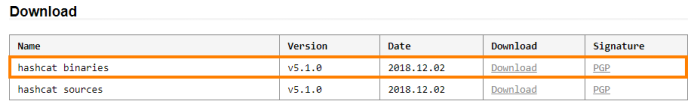

Hashcat (CPU-GPU)
site:
https://hashcat.net/hashcat/command line tool to crack password
hashes that use GPU to process the password cracking.
Hashcat runs on Windows and Linux, and Hashcat
performance between the two operating systems is virtually identical
Why use GPU for password cracking is better?
GPU is designed differently compared to CPU.
GPU allow to
process more operations concurrently because have more cores, hundreds
to thousands cores depending on brand and price range.
While usually CPU have between 2 and 8 cores
Speeds
of up to 18 million c/s (CPU) and 1 billion c/s (GPU)
Although most current GPU password cracking tools
focus on CUDA on NVIDIA cards, Hashcat takes advantage of the cross-platform capabilities of the Open Computing
Language (OCL) and runs on CPUs, ATI graphics cards, and NVIDIA graphics cards where systems have the appropriate
OCL drivers installed
Warning
Since we want that Hashcat can access to the hardware, in the specific to the GPU, is better to NOT
install it in a VM(try Windows that have same performance).
Anyway Hashcat has a problem with Intel integrated
GPU and in my test (using the option --force) work slowly than CPU :(
Download and install
After downloaded unpack in
in the directory of choice
Status of Hashcat
To manually get the status from Hashcat press the “s” key
Syntax
hashcat [options]... hash|hashfile|hccapxfile [dictionary|mask|directory]
example:
hashcat -w 3 -a 0 -m 3000 -o output.txt hashes.txt dictionary.lst -r /usr/share/hashcat/rules/best64.rule
OPTIONS
-m <number> or
--hash-type
<number> → algorithm used to create a hash of the specified hash-type
0 | MD5
900
| MD4
100 | SHA1
-a <number> or
--attack-mode
<number> 0 | Straight
1 | Combination
3 | Brute-force
6 | Hybrid Wordlist +
Mask
7 | Hybrid Mask + Wordlist
-w <0-4> → Workload Profile to use
(computing power)
-o <file> or
--outfile <file> → output
file where have the results saved for later
-b or
-benchmark → used to
do an initial efficiency test
-d <string> or
--opencl-devices
<string> → to specify the device to use
1 | CPU
2 | GPU
3 | FPGA, DSP,
Co-Processor
-O or
--optimized-kernel-enable → to optimize
performance